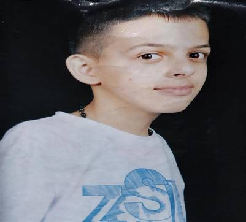

Adolescentes palestinos en misión suicida

- Un tercio de los atacantes de la 'Intifada de los cuchillos' que salpica de ataques Cisjordania desde octubre era menor de 20 años
- 'Terror de cuchillos' en Cisjordania
A sus 13 años, el palestino Ruqaya Abu Eid, se suma a la lista cada vez más amplia de jóvenes abatidos en sus ataques a israelíes desde el inicio de la escalada en octubre. Un tercio de los atacantes tenía menos de 20 años en la 'Intifada de los cuchillos'.
Como el que blandía este sábado este chico de la aldea de Anata en su carrera hacia Tomer, el guardia de la colonia de Anatot en Cisjordania. Según la portavoz policial, Luba Samri, "la investigación preliminar indica que se peleó con su familia, cogió un cuchillo y abandonó su casa con la intención de morir". Como muestra la cámara del asentamiento, Ruqaya se acercó a la entrada y tras pararse ante la petición del guarda, irrumpió corriendo con el puñal para matarle antes de recibir un disparo en un capítulo más de la ola que azota con altibajos los últimos cuatro meses.
Seis días antes, Morad Bader Adais, de 15 años, asesinó a cuchilladas a la judía Dafna Meir ante la presencia de uno de sus seis hijos en su casa de la colonia Otniel. Horas después, otro joven palestino hirió de gravedad a una israelí embarazada en el asentamiento Tekoa, también en el territorio ocupado por Israel en la guerra del 67. El más famoso de la lista es Ahmed Manasra, de 13 años. Junto a su primo Hassan, de 15, apuñaló en octubre un chaval israelí de su misma edad y a otro joven en Pisgat Zeev, al norte de Jerusalén. Tras ser herido y recuperarse en un hospital de Jerusalén, Manasra está detenido. Su primo murió por disparos israelíes durante su ataque. |